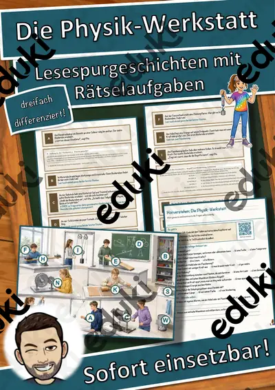

Der Kühlschrank – Lesespurgeschichte mit Rätselaufgaben (Klasse 8)
Lesespurgeschichte „Der Kühlschrank" – wie ein Kühlschrank die Wärme von innen nach außen befördert und Lebensmittel dadurch viel länger genießbar hält. Die Lernenden folgen einer spannenden Lesespur durch den Kältekreislauf: vom Innenraum über Verdampfer, Kompressor und Verflüssiger zur Drossel und schließlich zum Thermostat – und verstehen dabei anschaulich, wie ein Kältemittel Wärme aufnimmt und wieder abgibt (Physik: Wärme, Wärmetransport, Verdampfen und Verflüssigen, Druck und Temperatur).
Am Ende ergeben die gesammelten Buchstaben ein geheimes Lösungswort rund um das Thema. Vier Sackgassen sorgen für Selbstkontrolle und regen zum genauen Lesen an.
Das Material ist dreifach differenziert (leicht ★ / mittel ★★ / schwer ★★★) und sofort einsetzbar.
Inhalt:
- Lesespurgeschichte in 3 Niveaus (leicht, mittel, schwer)
- farbiger Geräte-Plan (Stationskarte)
- Hörverstehen mit QR-Code zur MP3
- drei Forschungsaufträge (Verbinden, Quiz, Steckbrief) + Rechenaufgabe
- Rätselseite (Wörter-Suchsel + Wissensquiz)
- Ausmalbild
- Lösungsblatt für die Lehrkraft
- farbig UND als Schwarz-Weiß-Vorlage zum Fotokopieren
Geförderte Kompetenzen: sinnentnehmendes und selektives Lesen, Lesestrategien, Hörverstehen sowie das Sachthema Wärme und Wärmetransport (Kältekreislauf einer Kältemaschine, Aggregatzustände, Aufnahme und Abgabe von Wärme, energiebewusster Umgang mit Haushaltsgeräten).
Einsetzbar in Freiarbeit, Stationenlernen, als Vertretungsstunde oder zur Vertiefung.
Hinweis: Die Texte wurden redaktionell geprüft; einige Illustrationen wurden mit KI-Werkzeugen erstellt und anschließend geprüft und ausgewählt.
Ähnliche Materialien

Kühlschrank – Hörverstehen mit Lückentext (interaktiv)

Kühlschrank Lückentext mit Wortspeicher Hörverstehen und Suchsel

Der Druck – Prüfungstraining Physik (Klasse 8)

Die Physik-Werkstatt – Lesespurgeschichte mit Rätselaufgaben (Klasse 7)

Handwärmer – wie Wärme aus der Tasche entsteht – Lesespurgeschichte mit Rätselaufgaben (Klasse 8)

Ein Festtagsmenü planen – Einkauf, Mengen und Zeitplan – Lesespurgeschichte mit Rätselaufgaben (Klasse 8)

Die Konservenfabrik – Lesespurgeschichte mit Rätselaufgaben (Klasse 8)